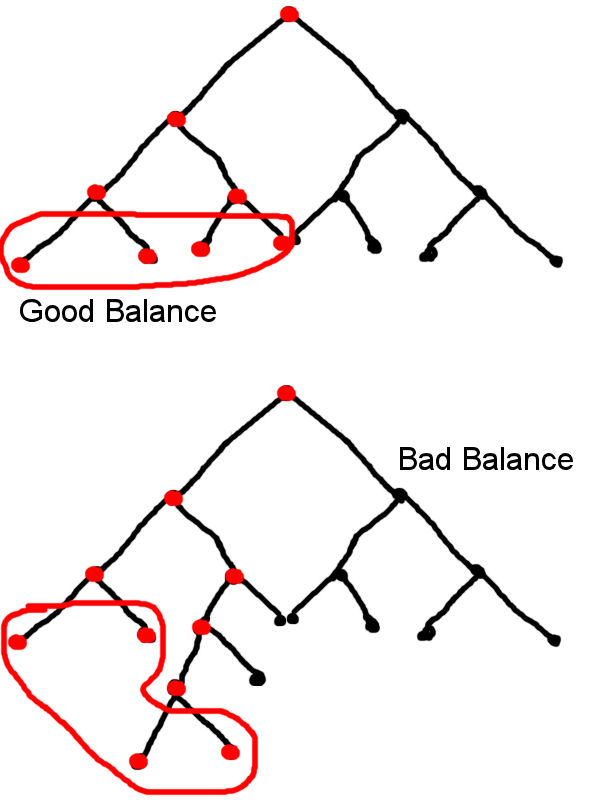

Node Count/MergingDebate
This is a pge for Tarquin & Entropic & anyone else who's interested to thrash out this nodecount / merging thing. See if we can work it out ourselves... and maybe call in the Epic cavalry if we can't. 
Definitions
Just so we're talking about the same stuff....
- Face
- a maximal set of coplanar polygons of a brush. (mathematician terminology, sorry...)
- Surface
- a polygon entity that is selectable with a single click in 3D view
- BSP Poly
- (maybe not the right word...) An area of single colour in the Zone view. (this is what I *believe* is the nodecount... but that's another story)
- Edge
- the edge of either a surface or BSP poly
Ways to merge:
- Polymerge
- using the Polys → merge command on aligned surfaces & then rebuilding
- Clip
- slice off the face to be merged
- Intersect
- while still at the red build brush stage, use world geometry to slice off the face to be merged.
Discussion
Exp 1
Shape: a square with the right-hand side split, and the new vertex brought in to the left till it's 1/4 of the width from the left side. The face is initially 3 surfaces.
- Intersect: 1 surface made of 2 BSP polys
- Clip: 2 surfaces, each is a single BSP poly
- Polymerge: 1 surface, 3 BSP polys.
![[polymerge.shape1]](images/polymerge-shape1.gif) |
In this particular case, no pair of the existing triangles can be merged to produce a convex shape, so the number of BSP polys isn't reduced by merging Nodecount when looking at this brush straight on is 4: 3 polys for the brush & the subtract in the background. Hence for this shape, polymerging is merely a convenience to the mapper & has no impact on the engine.
On the other hand, the other two methods produce an off-grid point.
I think I need a picture - I can't quite visualise the geometry your are using here. Good idea to create this page btw - keeps what's going to be a long and tortuous discussion (I suspect) out of the way. I'll repeat my extrusion experiments tonight and update this page with the pics. and results - EntropicLqd.
tada! Piccy  It's starting to seem like there's not one simple answer, different shapes benefit most from different techniques. N00bs in search of a one-size fits all holy grail answer are not gonna like this... lol! – Tarquin
It's starting to seem like there's not one simple answer, different shapes benefit most from different techniques. N00bs in search of a one-size fits all holy grail answer are not gonna like this... lol! – Tarquin
![[archway_example]](images/archway-example.gif) |
Here's a good one. Looking from left to right you have the original brush (a little redundant but I forgot to clip it out of the picture), the merged brush, the brush created using a clip, and the brush created using the subtract. For both the clipped and subtracted brush I used an intersected version of the brush to add them to the world. When viewed in game, I got the following results:
| Brush type | Nodes | Polygons |
The implication of that is pretty interesting. It seems that as the number of points on the extruded face increases subtracting or clipping the face produces better results than simply merging the polys. The most interesting thing about the above example though is that the very best results would be achieved by merging the faces on the "clipped" brush. For some reason the clipped brush produces a more efficient set of Faces.
Something else I just tried - Zoning the level I built (essentially a cross roads with four large rooms to the north, south, east, and west). This changes the node count which lends weight to my theory that the node count is the total number of nodes within the BSP traversed rather than visible (which makes more sense to me from a performance monitoring point of view as well). Here's the post level zoning results
| Brush type | Nodes | Polygons |
I did cheat a little as I set the BSP "minimise cuts/balance tree" weighting to 5 when I built the level.
Mosquito:I read all this and it doesn't even have a conclusion, This Channel sucks. Now I'm gonna be bothered for weeks.
Tarquin: Well.... the conclusion was, I think: "It depends on the type of shape. Clip and intersect cuts may have non-grid points, so that's an extra thing to watch for."
EntropicLqd: It's more of a journey than a destination – To be honest this topic is somewhat moot now that everythings gone to static-mesh hell.
SuicideMissions{CLR}: LOL. We know that the leaves of the BSP tree correspond to BSP Polys. If in the phrase "node:poly" ratio, "poly" refers to BSP Polys, then how could the ratio be anything other than 1:1? Therefore, *if* poly means BSP poly, then node MUST mean all nodes traversed in the tree. This also does make sense from a performance-stat point of view.

Doggone near PROOF that "Node Count" refers to the number of nodes TRAVERSED in the BSP tree!. Count the traversed nodes ("Node Count") vs. the leaf nodes (BSP Polys). |
And that number 2 (as in 2:1) sounds suspiciously related to the BINARY/Logarithmic nature of BSP trees. A well balanced tree will have approximately a 2:1 ratio of traversal vs. leaves. Try it! Count nodes and leaves in those trees above! A 2:1 ratio gives you the most leaves for the fewest traversals possible for any non-trival tree. It happens when the tree is balanced.